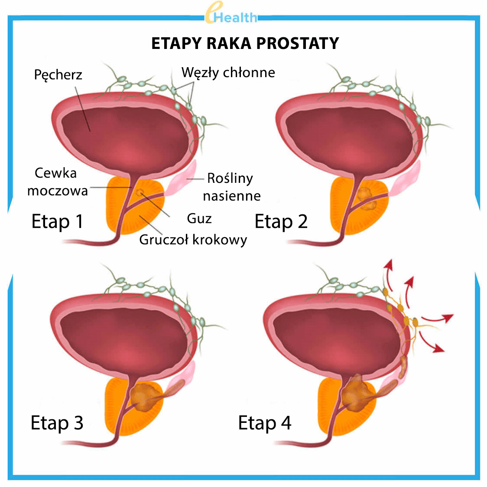
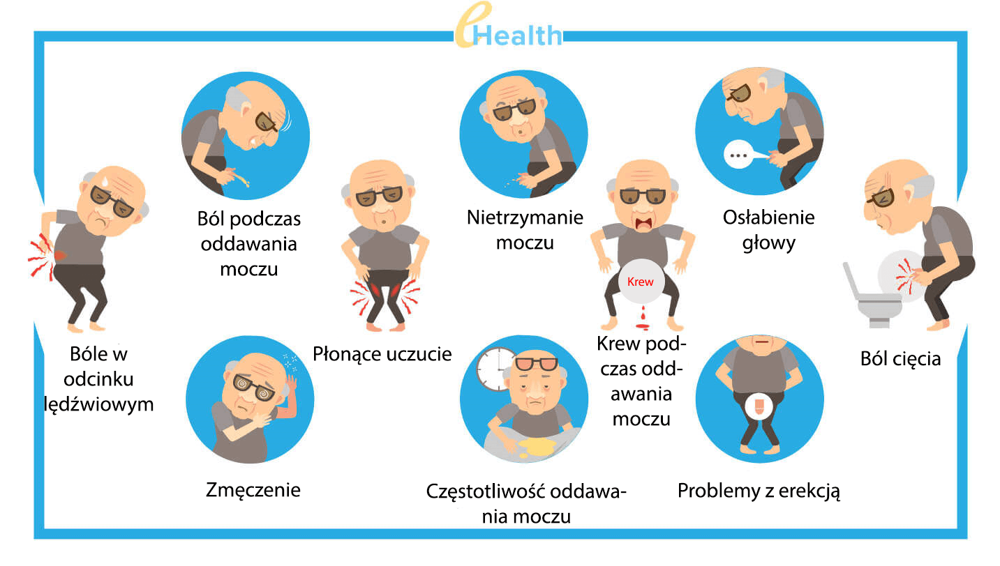
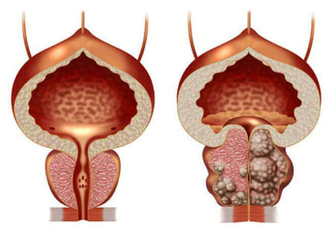
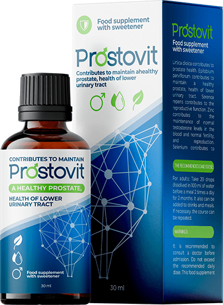

W Izraelu potrafią raz na zawsze leczyć zapalenie gruczołu
krokowego, w ciągu zaledwie 2-3 tygodni.
(procedura jest opisana poniżej)
Niesamowity środek, który można nazwać przełomem w medycynie za jedyne z rabatem tylko do włącznie! (Więcej informacji o tej metodzie)
Zapalenie gruczołu krokowego jest najczęstszą chorobą wśród mężczyzn po 40 roku życia, ale lekarze zauważyli, że niestety choroba staje się co raz "młodsza". Do lekarzy przychodzą mężczyźni z takimi "problemami", którzy mają tylko 30, 25, a nawet 20 lat.

Jak lekarze tłumaczą, dlaczego ta choroba jest tak popularna: każdy mężczyzna:
- - który ma siedzący tryb życia,
- - który nie ma regularnego życia seksualnego,
- - który nie pilnuje zdrowego stylu życia,
- - infekcja,
- - który doświadcza się dużego stresu lub często cierpi na przeziębienie z gorączką
najprawdopodobniej jest już chory na zapalenie gruczołu krokowego. Im więcej czynników, tym choroba rozwija się silniej i szybciej. Dla niektórych osób pojawia się w wieku 25 lat, dla innych, w wieku 45 lat, to tylko kwestia czasu…
Objawy zapalenia gruczołu krokowego, sprawdź samodzielnie:

Francuscy urologowie opowiedzieli o strasznych statystykach : więcej niż 55% mężczyzn w wieku po 40 w ten czy inny sposób mają problemy z prostatą. Żeby zrozumieć, czy dana osoba jest chora na zapalenie gruczołu krokowego nie jest wcale trudne i nie trzeba być lekarzem, objawy są proste i konkretne.
-
Częste ostre bóle
- - w podbrzuszu lub w jądrach;
- - ból w penisie lub w pachwinie;
-
Problemy z oddawaniem moczu
- - Częsta potrzeba iść do toalety, odczucie ostrego bólu w cewce moczowej przy oddawaniu moczu;
- - Uczucie że oddawania moczu "nie wyszło do końca";
- - Problemy z oddawaniem moczu (bardzo słaby strumień);
-
Problemy związane ze stosunkiem płciowym
- - Słabe libido;
- - Erekcja jest zła i nie trzyma się długo;
-
Problemy związane z wytryskiem:
- - Szybki wytrysk;
- - Słaby wytrysk
-
Stałe zmęczenie fizyczne i psychiczne.
Pomimo pogorszenia stanu środowiska w ostatnim czasie, wielu ludzi żyje z zapaleniem gruczołu krokowego i nawet nie wie, jakie mogą być konsekwencje i jak może to wpłynąć na ich przyszłe życie…

Jeśli nie leczyć zapalenia gruczołu krokowego, to choroba
rozwija się bardzo szybko i zawsze prowadzi do gruczolaka prostaty ("męska śmierć")
Po części możemy zrozumieć ludzi z tą chorobą, szczególnie biorąc pod uwagę poziom medycyny w naszym kraju. W większości przypadków, po otrzymaniu diagnozy "zapalenia gruczołu krokowego" wizyta u urologa staje się ciężkim rocznym obowiązkiem. Lekarze wygaszają ostre objawy za pomocą leków "zalecanych przez farmaceutów", ale przy każdym schłodzeniu lub nieprzestrzeganiu, zapalenie gruczołu krokowego «ponownie atakuje
Jak leczą zapalenie gruczołu krokowego w Polsce (czyli jak NIE WARTO go leczyć)
Niestety w naszym kraju, biorąc pod uwagę poziom medycyny, nigdy nie zmożesz pozbyć się zapalenia gruczołu krokowego w stu procentach, bez względu na to, jak bardzo tego chcesz.
Standardowa procedura leczenia zapalenia gruczołu krokowego w Polsce

- Mężczyzna idzie do kliniki. Nie ma znaczenia, czy na wizytę prywatną, czy za darmo. . A jeśli pójdziesz do państwowego szpitala, to musisz pamiętać o niesamowitej kolejce.
- Lekarz przeprowadza badanie, przepisuje wiele badań, testów. Niektóre z nich nie są nawet potrzebne, ale ze względów bezpieczeństwo musisz to zrobić, ponieważ możliwe jest, że u danej osoby znajdą coś, o co trzeba się martwić. Ponadto wszystkie testy są płatne.
- Po badaniach lekarz diagnozuje «"zapalenie gruczołu krokowego" i zaleca użycie "zalecanych leków»". Przepisane środki to te, które mają na celu zmniejszenie ostrych objawów choroby, ale nie leczenie przewlekłego zapalenia gruczołu krokowego. I, oczywiście, urolog zaleca leki od firm, których przedstawiciele medyczni przyniosą mu większe dochody. Wszyscy doskonale zdają sobie sprawę z tego, jakie leki są w to zaangażowane.
- Oprócz "zalecanych" leków na zmniejszenie objawów, lekarze zawsze polecają masaż odbytu
gruczołu krokowego lub leczenie podobnymi metodami. Jest to procedura upokarzająca i bardzo
nieprzyjemna, ponieważ masaż odbywa się palcem przez odbyt. Średni kurs masażu stanowi od 10 do 14
sesji. Za każdą sesję trzeba oczywiście zapłacić. W Stanach Zjednoczonych i Kanadzie masaż ten nie był
wykonywany od ponad 20 lat, ponieważ nowoczesne leki mogą bez niego leczyć zapalenie gruczołu
krokowego.

- Oprócz głównego leczenia lekarze często przepisują leki, które poprawiają jakość życia seksualnego, poprawiają jakość plemników, "przywracają organizm" po antybiotykach itp.
- Zwykle, w wyniku tego leczenia, zapalenie gruczołu krokowego nie jest wyleczone, ale nawet jeśli odchodzi, to polepszenie nie trwa długo. Potem wraca z nową podwójną siłą. W wyniku, "kuracja zachowawcza" nie pomaga, a lekarz przepisuje operację gruczołu krokowego, co bardzo często prowadzi do impotencji.
Powiedzmy, że jeśli masz zapalenie gruczołu krokowego, będziesz musiał dawać lekarzom i aptekom co najmniej 5000-10000 euro rocznie! W istocie urologowie tworzą przede wszystkim kurs terapii oparty na finansowych możliwościach pacjenta. A potem, gdy "zalecane leki" przestaną ci pomagać, po prostu odetną twoją prostatę. Dokładnie tak się dzieje w polskim biznesie urologiczno-farmaceutycznym.
jak leczy się zapalenie gruczołu krokowego w Stanach Zjednoczonych i Kanadzie (i jak należy go leczyć)
W krajach zachodnich przy leczeniu zapalenia gruczołu krokowego nie trzeba nawet konsultować się z lekarzem. Wystarczy przejść do apteki przy pierwszych objawach i kupić środek, który jest już znany i przeszedł wszystkie badania kliniczne, wykonany z ekstraktów z owoców palmy karłowatej (Saw Palmetto), wydajność w 98% wykazana jeszcze w łatach 80.
Oczywiście, po licznych kontrolach bezpieczeństwa leku, stał się złotym standardem w leczeniu zapalenia gruczołu krokowego "raz na zawsze" w Stanach Zjednoczonych i Kanadzie
Oczywiście, ten lek nie jest opłacalny dla polskiej mafii farmaceutycznej, ponieważ o wiele taniej jest "oszukać" osobę, aby po prostu tłumić bolesne objawy każdego roku, niż całkowicie wyleczyć chorobę za pomocą niedrogiego produktu, który jest w zasięgu każdej osoby.
W przeciwieństwie do naszego kraju w Stanach Zjednoczonych, Anglii, Francji, Niemczech i innych rozwiniętych krajach, system ubezpieczenia zdrowotnego również jest bardzo rozwinięty. Firmy ubezpieczeniowe nie są zainteresowane w tym żeby co druga osoba odwiedzała lekarza dwa razy w roku, ponieważ firmy ubezpieczeniowe muszą to wszystko płacić, a wynagrodzenia lekarzy są dość wysokie. Wręcz przeciwnie, są zainteresowani, aby leczenie było tak skuteczne i szybkie, jak to tylko możliwe. Raz na zawsze.
W krajach zachodnich interesy firm ubezpieczeniowych zdobyły mafię aptekarską, a na szczęście zwykłych mężczyzn, środek do leczenia zapalenia gruczołu krokowego jest zawsze dostępny w aptekach...
Czy sytuacja może się poprawić w Polsce?
Niestety, nie ma pozytywnych zmian w pracy aptek i polskich lekarzy, ponieważ działalność farmakologiczna to wielomiliardowy biznes, a najważniejsi ludzie na tym świecie otrzymują dochody. Prawdopodobnie to wiecie.
Jednak dzisiaj nie ma potrzeby kupowania leków w aptekach. Możesz to zrobić online na specjalnych stronach internetowych. Ostatnio jeden z najskuteczniejszych zachodnich środków pojawił się i w Polsce. I oczywiście ludzie bardzo go już polubili.
Zobaczymy co odróżnia od najpopularniejszego leku do leczenia zapalenia gruczołu krokowego.Prostamol Uno, który jest sprzedawany w aptekach
|

|
 Prostamol Uno |
|
|---|---|---|
| Działanie: | Całkowicie wyleczy zapalenie gruczołu krokowego, nawet w stanie przewlekłym. Raz i na zawsze. Wystarczy 1 kurs. | Pomoże jedynie w eliminacji ostrych objawów zapalenia gruczołu krokowego, czyli zaburzeń związanych z bólem i oddawaniem moczu. |
| Dodatkowe działania: | º Poprawia libido º Zapobiega przedwczesnemu wytryskowi º Poprawia męską siłę º Normalizuje prace układu moczowego º Poprawia stan naczyń krwionośnych |
Zwiększona ruchliwość jelitu |
| Efekty uboczne | Brak. Tylko naturalne składniki. | º Przy częstym stosowaniu może powodować złośliwe zmiany w gruczole
krokowym. º Zmniejsza męską moc ºPowoduje problemy jelitowe º Hamuje układ odpornościowy, prowadzi do rozwoju alergii º Powoduje ostry ból brzucha. |
| Jak to działa: | Działa na gruczoł krokowy w całości dzięki specjalnie dobranej kompozycji 6 naturalnych składników, posiada działanie przeciwzapalnie. Usuwa całą patogenną florę z gruczołu prostaty, poprawia strukturę i funkcję prostaty. Zalecany w przypadku przewlekłego i bakteryjnego zapalenia gruczołu krokowego. | Tymczasowo łagodzi ból w gruczole krokowym, maskując przebieg choroby. Jednak po zaprzestaniu stosowania leku choroba powraca. |
| Składniki: | Naturalne składniki ziołowe i witaminy | Jedynym naturalnym składnikiem są zmiażdżone owoce palmy karłowatej (nawet nie ekstrakt!). Wszystkie inne składniki to tylko chemia, dwutlenek tytanu; barwnik z czarnego tlenku żelaza; zabarwienie (E 124), itp. |
| Gwarancje: | roczna gwarancja producenta | bez gwarancji |
Niemniej jednak, pomimo sytuacji w aptekach, w naszym kraju można dostać ten środek! Aby uczynić go bardziej dostępnym, uruchomiliśmy program państwowy „Zdrowie mężczyzn”. Tak więc każdy kto jest w potrzebie ma teraz możliwość leczenia zapalenia gruczołu krokowego, nie doprowadzając chorobę do stadium raka, i leczyć się niezależne od możliwości finansowych. W ramach programu możesz otrzymać z 50% rabatem
Kupić na oficjalnej stronie producenta, klikając przycisk poniżej.
Pamiętaj, że duże firmy farmaceutyczne rozpoczęły już kampanię na dużą skalę przeciwko temu lekowi. Możliwe, że w pewnym momencie zakup w Polsce stanie się niemożliwy. Zdarzyła się taka sytuacja wielokrotnie z innymi lekami. Dlatego zalecamy nie odkładać zakupu. Rabat na lek będzie ważny do (włącznie)
MOŻESZ ZAMÓWIĆ ZE ZNIŻKĄ 50%! WYPEŁNIJ FORMULARZ O UDZIAŁ W PROGRAMIE! OFERTA BĘDZIE WAŻNA NAPRAWDĘ PRZED (WŁĄCZNIE)
Komentarze
Kamil
W pełni potwierdzam! – jest cudownym lekiem. Kupiłem go w Montenegro, kiedy miałem urlop zeszłego lata. Wcześniej przez 10 lat cierpiałem na przewlekłe zapalenie gruczołu krokowego. Traktowałem chorobę na poważnie, leczyłem się, ale jak napisałem powyżej, to leczenie dawało tylko tymczasowy efekt. Z użyciem prostatitis był całkowicie przewalczony. Przez ponad pół roku nie czuję żadnych ubawów. Wcześniej mogłem o tym tylko marzyć. Polecam dla wszystkich mężczyzn. On pomoże Ci!
Waldek
Zamówiłem. Dostałem opakowanie Byłem mile zaskoczony. Dziękuję!
Kacper
Również mam doświadczenie w leczeniu zapalenia gruczołu krokowego za pomocą tego leku. Kupiłem go na wskazanej stronie internetowej, tylko wtedy nie było żadnych rabatów i akcji. Ale to nie szkoda, najważniejsze, że pomógł mi pozbyć się zapalenia gruczołu krokowego w około 2 tygodnie bez żadnych masaży.
Dariusz
Zamówić
Arkadiusz
Oglądałem jakiś program telewizyjny na tvn1 o działalności farmaceutycznej w Polsce. Coś w stylu badania dziennikarskiego. Mówili także o tym leku. Że póki jest dostępny, trzeba szybko kupować, bo wkrótce może nie być.
Karol
Miałem przewlekłe zapalenie gruczołu krokowego odkąd miałem 28 lat. Teraz mam 41. W tym czasie leczyłem się dwukrotnie, gdy wystąpiły ciężkie zaostrzenia. Ostatni raz lekarze ledwie mnie ocalili. Powiedzieli że jeżeli by trochę późnej skapnąłem się, to zapalenie gruczołu krokowego przeszło by na raka prostaty. Dlatego radzę wszystkim osobom, którzy mają zapalenie gruczołu krokowego, aby pozbyć się go tak szybko, jak to możliwe. To bardzo niebezpieczna choroba.
Agata
Muszę zamówić taki środek dla męża. Dzięki!
Roman
Kupiłem. Dzięki producentowi!
Łukasz
– najlepszy lek ze wszystkich! Zgadzam się z autorem artykułu i wszystkimi komentatorami, którzy go chwalą. Brałem go około 3 miesiące temu. Zapalenie gruczołu krokowego przeszło w jeden kurs! Wcześniej chorowałem przez kilka lat, z powodu tego nie mogłem dać radę z stosunkiem płciowym, i szybko dochodziłem. Teraz wszystko jest normalne
Rafał
+500. Świetny środek
Adam
Przeczytałem szczególowo o na stronie internetowej. Jestem pod wrażeniem! Zamówiłem. Obiecali, że za 5 dni będę mógł odbierać na poczcie. Wygodnie.

Aza Kaufman, kierownik Instytutu Biomedycynego im. Paula Ericha w Izraelu, profesor Wydziału Urologii
Metoda nieinwazyjnego leczenia zapalenia gruczołu krokowego przy użyciu naturalnych suplementów została po raz pierwszy odkryta przez izraelskiego urologa Izę Kaufman w ramach badań prowadzonych w Instytucie Nauk Biomedycznych Paula Ericha.
Aza Kaufman wykazała, że środek jest w stanie wyeliminować zapalenie gruczołu krokowego w 98% przypadków dzięki naturalnym składnikom, w tym ekstrakt z serenii.
W ostatnich latach, środki z zawarciem sereny w składnikach, takie jak , były coraz częściej przepisywane przez izraelskich lekarzy i ich kolegami w innych krajach.
Jedyny produkt, którego skuteczność i bezpieczeństwo jest uznawane przez społeczność naukową, jest sprzedawany w Polsce pod nazwą .
Michał
Dzięki za ciekawy artykuł! W Polsce wszystko zawiązane na łapówkach, na najwyższym poziomie, dobrze, że Internet jest chociaż dostępny. Zamówiłem . Będę leczyć się.